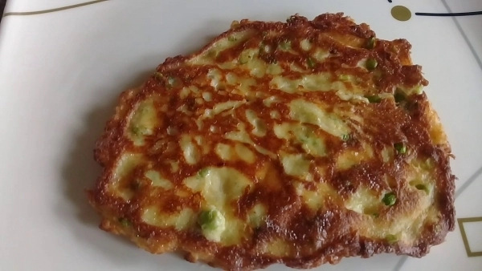

Torta de loroco
Queso mozzarella
1 taza de Lorocos
Aceite
1 pizca de Sal
preparación:
picar el loroco finamente y reservarlo
Luego, se baten los 3 huevos a punto de nieve, pudiendo mezclar la clara y la yema si se desea
Se agrega el loroco picado a la mezcla de huevos, junto con un poco de queso
luego cocinar hasta la consistencia deseada y reervar
En una sartén con un poco de aceite caliente, se añaden las verduras cortadas para hacer el sofrito
Se agrega pasta de ajo, y si se prefiere, laurel y tomillo al gusto
En un lado de la sartén, se cocina la carne molida con un poco de caldo de carne reservado a fuego lento
Después de asegurarse de que no haya aire en la olla a presión, se agrega la zanahoria en trozos y el caldo de carne restante
Se vuelve a tapar la olla y se cocina por 20-30 minutos más, hasta que los frijoles estén blandos
Una vez cocidos los frijoles, se mezclan con el sofrito base y la carne, removiendo hasta integrar todos los ingredientes
Se licua el caldo sobrante con la zanahoria y se agrega a la olla del guiso